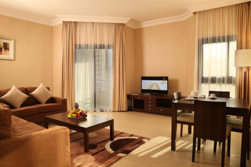
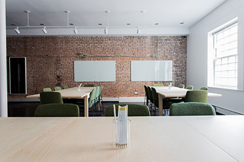

Наведение и поддержание порядка в квартире - непростое дело, занимающее много времени и отниающее много сил.
Мы все в той или иной степени тянемся к комфорту и хотим, чтобы у нас квартире было чисто и уютно. Если темп вашей жизни не позволяет уделять уборке много времени, или у Вас не получается навести порядок так, как Вам этого хочется (избавиться от каких-то загрязнений, удалить водяной налет и т.д.), то смело звоните нам - у нас все получится.

Поддержание чистоты в собственном доме - задача более сложная, чем в квартире. Конечно, это обусловлено большей площадью уборки, а также особенностями интерьера загородных домов (лестницы, камины и т.д.). Процесс уборки в загородном доме занимает гораздо больше времени, используется больше оборудования и чистящих средств. Доверьте уборку своего дома нам - а сами занимайтесь чем-то более полезным и приятным

Реальность такова, что услуги по уборке офисов выгодней отдать на аутсорт клининговой компании, чем держать в штате своих уборщиков. Наши клинеры умеют быть незаметными как для персонала, так и для посетителей, знают как и чем ухаживать за различными материалами, будь это дерево, мрамор или ковровое покрытие. У Вас не возникнет вопросов где взять и купить то или иное средство, оборудование или инвентарь. Мы всё возьмем на себя и обеспечим комфортные условия для работы сотрудников и приятную атмосферу для Ваших клиетов.
Виды уборок
Поддерживающая
Рекомендуем проводить раз в неделю после генеральной уборки. Подразумевает сухую и влажную уборку поверхностей на высоте до двух метров: протираем пыль, пылесосим, моем полы, подоконники, чистим и дезинфицируем сантехнику, моем плиту, выносим мусор.
Поддерживающая уборка
в комнатах
проводим сухую уборку пылесосом, включая мягкую мебель и балкон/лоджию
моем пол
протираем и моем плинтусы
удаляем пыль со стен
протираем все доступные поверхности (до 2-х метров)
делаем влажную протирку корпусной мебели снаружи
протираем настенные и настольные осветительные приборы
делаем влажную протирку элементов интерьера и декора (до 2-х метров)
протираем аудио- и видеотехнику
моем зеркала и стеклянные поверхности
протираем выключатели и дверные ручки
протираем подоконники
протираем радиаторы
удаляем несложные загрязнения
меняем постельное белье
застилаем кровать
расставляем обувь
выносим мусор и меняем пакеты
на кухне и санузле
чистим и дезинфекцируем всю сантехнику в санузле и на кухне (краны, смесители, раковины, ванна, душевая кабина, унитаз и т.д.)
чистим и удаляем локальные загрязнения на кафельной плитке
моем снаружи стиральную машину
протираем полотенцесушитель
протираем электровентилятор
протираем электроприборы
протираем столешницы, барные стойки
моем посуду
удаляем следы жира и моем кухонный фартук
удаляем следы жира и моем снаружи плиту
удаляем следы жира и моем снаружи вытяжку
удаляем следы жира и моем снаружи стеновые панели кухонного гарнитура(до 2-х метров)
моем снаружи свч
моем снаружи холодильник
моем снаружи духовой шкаф
протираем стол
Генеральная
Рекомендуем проводить 1 раз в 3 месяца. Подразумевает очистку всех трудодоступных мест, в которых скопилась грязь и пыль на всю высоту помещения и удаление сильных загрязнений, уход за мягкой мебелью. Дополнительно к работам, входящим в поддерживающую уборку моем стены, потолок, холодильник, СВЧ, удаляем водный камень и водный налет, удаляем сложные загрязнения
Генеральная уборка
в комнатах
удаляем пыль со стен и потолков
протираем все доступные поверхности на всю высоту
моем корпусную мебель снаружи и внутри (если она освобождена) и полируем ее
делаем влажную уборку дверей, включая фурнитуру, дверных коробок
моем и обрабатываем радиаторы парогенераторомподоконники
моем подоконники
ухаживаем за кожаной мебелью
Удаляем загрязнения средней и сильной степени сложности
Очищаем экраны телевизоров и мониторов специальными средствами
удаляем пыь с люстр и потолочных светильников (за исключением хрустальных люстр)
делаем влажную уборку верхних частей перегородок, антресолей
выносим мусор и дезинфицируем места хранения мусора
на кухне и санузле
очищаем кафельную плитку на всю высоту
чистим межплиточные швы
Чистим сетки вентиляции без съема
Удаляем пыль с антресолей кухонного гарнитура
удаляем следы жира и моем снаружи и внутрии стеновые панели кухонного гарнитура на всю высоту
моем снаружи и внутри все шкафчики в ванной
моем внутри плиту
моем внутри вытяжку
моем внутри свч
моем внутри холодильник
моем внутри духовой шкаф
протираем стол
После ремонта
Дополнительно к работам, входящим в генеральную уборку, моем окна снаружи и внутри, удаляем остатки краски, шпатлевки, клея, скотча, выносим крупный мусор, убираем строительную пыль. В каждом отдельном случае, стоимость уборки после ремонта рассчитывается индивидуально - в прайсе приведены примерные цены
Уборка после ремонта
удаляем строительную пыль во всем помещении
очищаем стыки поверхностей промышленным пылесосом
Удаляеи специфические загрязнения от монтажной пены, краски, клеz
Удаляем остатки скотча, наклеек
Двигаем нетяжелую мебель и протираем за ней
Чистим парогенератором труднодоступные места
Моем кафельную плитку, устраняем оставшиеся загрязнения, чистим швы с парогенератором
Моем кондиционер снаружи и внутри, включая фильтры
Избавляем вас от оставшихся строительных материалов и смесей, мусора (кроме крупногабаритного);
Дополнительные услуги
Кроме основных услуг по уборке Вы можете заказать у нас дополнительные услуги: включить работы, которые по умолчанию не входят в ту или иную уборку, заказать доставку ключей от квартиры/дома, отремонтировать или заменить сантехнику, убрать балкон, сделать химчистку мягкой мебели и ковровых покрытий. Скажите что Вам нужно и мы все организуем
Дополнительные услуги
стирка и глажка белья
чистка и глажка штор
удаление шерсти с ковровых покрытий и мягкой мебели
мытье хрустальных и сложных люстр
смена постельного белья
устранение неприятных запахов
помощь сантехника и электрика
чистка и уход за обувью
вынос тяжелого мусора
взять/отдать ключи
Поддерживающая
Генеральная
После ремонта
Дополнительные услуги
Рекомендуем проводить раз в неделю после генеральной уборки. Подразумевает сухую и влажную уборку поверхностей на высоте до двух метров: протираем пыль, пылесосим, моем полы, подоконники, чистим и дезинфицируем сантехнику, моем плиту, выносим мусор.
поддерживающая в комнатах
проводим сухую уборку пылесосом, включая мягкую мебель и балкон/лоджию
моем пол
протираем и моем плинтусы
удаляем пыль со стен
протираем все доступные поверхности (до 2-х метров)
делаем влажную протирку корпусной мебели снаружи
протираем настенные и настольные осветительные приборы
делаем влажную протирку элементов интерьера и декора (до 2-х метров)
протираем аудио- и видеотехнику
моем зеркала и стеклянные поверхности
протираем выключатели и дверные ручки
протираем подоконники
протираем радиаторы
удаляем несложные загрязнения
меняем постельное белье
застилаем кровать
расставляем обувь
выносим мусор и меняем пакеты
на кухне и санузле
чистим и дезинфекцируем всю сантехнику в санузле и на кухне (краны, смесители, раковины, ванна, душевая кабина, унитаз и т.д.)
чистим и удаляем локальные загрязнения на кафельной плитке
моем снаружи стиральную машину
протираем полотенцесушитель
протираем электровентилятор
протираем электроприборы
протираем столешницы, барные стойки
моем посуду
удаляем следы жира и моем кухонный фартук
удаляем следы жира и моем снаружи плиту
удаляем следы жира и моем снаружи вытяжку
удаляем следы жира и моем снаружи стеновые панели кухонного гарнитура(до 2-х метров)
моем снаружи свч
моем снаружи холодильник
моем снаружи духовой шкаф
протираем стол
Рекомендуем проводить 1 раз в 3 месяца. Подразумевает очистку всех трудодоступных мест, в которых скопилась грязь и пыль на всю высоту помещения и удаление сильных загрязнений, уход за мягкой мебелью. Дополнительно к работам, входящим в поддерживающую уборку моем стены, потолок, холодильник, СВЧ, удаляем водный камень и водный налет, удаляем сложные загрязнения
генеральная в комнатах
удаляем пыль со стен и потолков
протираем все доступные поверхности на всю высоту
моем корпусную мебель снаружи и внутри (если она освобождена) и полируем ее
делаем влажную уборку дверей, включая фурнитуру, дверных коробок
моем и обрабатываем радиаторы парогенераторомподоконники
моем подоконники
ухаживаем за кожаной мебелью
Удаляем загрязнения средней и сильной степени сложности
Очищаем экраны телевизоров и мониторов специальными средствами
удаляем пыь с люстр и потолочных светильников (за исключением хрустальных люстр)
делаем влажную уборку верхних частей перегородок, антресолей
выносим мусор и дезинфицируем места хранения мусора
на кухне и санузле
очищаем кафельную плитку на всю высоту
чистим межплиточные швы
Чистим сетки вентиляции без съема
Удаляем пыль с антресолей кухонного гарнитура
удаляем следы жира и моем снаружи и внутрии стеновые панели кухонного гарнитура на всю высоту
моем снаружи и внутри все шкафчики в ванной
моем внутри плиту
моем внутри вытяжку
моем внутри свч
моем внутри холодильник
моем внутри духовой шкаф
протираем стол
Дополнительно к работам, входящим в генеральную уборку, моем окна снаружи и внутри, удаляем остатки краски, шпатлевки, клея, скотча, выносим крупный мусор, убираем строительную пыль. В каждом отдельном случае, стоимость уборки после ремонта рассчитывается индивидуально - в прайсе приведены примерные цены
в комнатах после ремонта
Двигаем нетяжелую мебель и протираем за ней
Чистим парогенератором труднодоступные места
Моем кафельную плитку, устраняем оставшиеся загрязнения, чистим швы с парогенератором
Моем кондиционер снаружи и внутри, включая фильтры
Избавляем вас от оставшихся строительных материалов и смесей, мусора (кроме крупногабаритного);
Удаляеи специфические загрязнения от монтажной пены, краски, клеz
Удаляем остатки скотча, наклеек
Кроме основных услуг по уборке Вы можете заказать у нас дополнительные услуги: включить работы, которые по умолчанию не входят в ту или иную уборку, заказать доставку ключей от квартиры/дома, отремонтировать или заменить сантехнику, убрать балкон, сделать химчистку мягкой мебели и ковровых покрытий. Скажите что Вам нужно и мы все организуем
стирка и глажка белья
чистка и глажка штор
удаление шерсти с ковровых покрытий и мягкой мебели
мытье хрустальных и сложных люстр
смена постельного белья
устранение неприятных запахов
помощь сантехника и электрика
чистка и уход за обувью
вынос тяжелого мусора
взять/отдать ключи
уборка в ночное время
наши цены
Поддерживающая уборка
Уборка квартиры
1-комнатная квартира (до 50 м2) - 3 000 р.
2-комнатная квартира (до 75 м2) - 4 100 р.
3-комнатная квартира (до 90 м2) - 4 500 р.
более 90 м2 - 45 р/м2
Уборка дома
площадь до 100 м2 - 6 000 р.
площадь до 200 м2 - 11 000 р.
площадь более 200 м2 - 50 р/м2.
Уборка офиса (разовая)
площадь до 50 м 2 - 3 500 р.
площадь до 100 м2 - 6 000 р.
площадь более 100 м2 - 55 р/м2.
Генеральная уборка
Уборка квартиры
1-комнатная квартира (до 50 м2) - 4 750 р.
2-комнатная квартира (до 75 м2) - 6 750 р.
3-комнатная квартира (до 90 м2) - от 7 650 р.
более до 90 м2 - 80 р/м2
Уборка дома
площадь до 100 м2 - 9 500 руб.
площадь до 200 м2- 18 000 руб.
более до 200 м2 - 85 р/м2
Уборка офиса
площадь до 100 м25 - 8 000 р. (80 р/м2)
площадь до 200 м2 - 14 000 р. (70 р/м2)
площадь более 200 м2 - 60 р./м2
Уборка после ремонта
Уборка квартиры
1-комнатная квартира (до 50 м2) - 7 500 руб.
2-комнатная квартира (до 75 м2) - 10 500 руб.
3-комнатная квартира (до 90 м2) - 11 700 руб.
более 90 м2) - 120 р/м2
Уборка дома
площадь до 100 м2 - 15000 р.
площадь до 200 м2- 28 000 р.
площадь более 200 м2 от 130 р./м2
Уборка офиса
площадь до 100м2 - 9 000 р. 90 р/м2
площадь до 200м2 - 16 000 р. (80 р/м2)
площадь более 200м2 - 70 р./м2
Дополнительные услуги
Стоимость может меняться в зависимости от степени загрязнения, срочности, необходимости доставки специального оборудования
Наша ответственность застрахована на 2 000 000 руб. Если что-то пошло не так, мы возместим любой ущерб.
срочная уборка
Выезд к заказчику в день обращения в течении двух часов после оформления заказа
квалифицированный персонал
Все наши сотрудники - мастера своего дела, обладающие колосальным опытом (стаж работы не менее 3-х лет)
дополнительные услуги
Химчистка, уборка балкона, высоких поверхностей, стирка и глажка белья, вынос мусора, получение и доставка ключей
современные технологии
Все чистящие средства, используемые нами в работе безопасны для здоровья человека и окружаещей среды.
часто задаваемые вопросы
Можно ли оплатить уборку банковской картой?
Да, конечно. Вы можете оплатить любым способом: наличными, банковской картой, Apple Pay, Google Pay, Samsung Pay и т.д.
Сколько клинеров проводят уборку?
В зависимости от вида уборки, площади помещения и срочности выполнения работ, состав бригады может отличаться. Количество клинеров мы согласовываем с Вами в момент оформления заказа. Если Вас устраивает стандартное время выполнения уборки, то на площадь до 50 м выезжает 1 специалист, до 100 м - два-три, более 100 м - три - шесть клинеров - все зависит от объёма работ и степени загрязнения
Как быстро вы приедете?
Одним из наших преимуществ является скорость выезда специалистов на место - в случае срочной необходимости мы приедем в течении двух часов с момента оформления заказа
Кто придет убираться?
В клинерами в нашей компании работают граждане РФ, которые несут материальную ответственность за свою работу. Они знают когда и как применять те или иные средства, особенности ухода и очищения различных материалов.
Можно ли, чтобы на уборку приходил один и тот же клинер?
Если Вам понравилась то как мы навели порядок, и хотите, чтобы этот же специалист делал это регулярно - просто сообщите нам. Мы поощерим клинера и сделаем скидку Вам.
Нужно ли оставлять клинерам инвентарь?
Все оборудование мы привозим с собой. И моющие средства и весь инвентарь.
Выезжаете ли вы за МКАД?
Конечно выезжаем. Стоимость вызова на место в зоне действия карты "Тройка" - бесплатно, если нет - добавляется сумма из расчета 30 руб/км
Есть ли у вас скидки?
Конечно есть. При заказе регулярной уборки на 3 месяца - скидка 10%, на 6 месяцев - 15%, на 12 месяцев - 20%. При разрешении разместить на нашем сайте фото уборки Вашей квартиры/дома/офиса - 5% на любые уборки навсегда.
9. Что делать, если у меня возникли вопросы по уборке?
Если Вам что-то не устроило - в течении 48 часов после приема работ сообщите нам и мы устраним любые недочеты. Если клинер повредил что-то, мы выплатим денежную компенсаци или отремонтируем или заменим на новую в кратчайшие сроки.